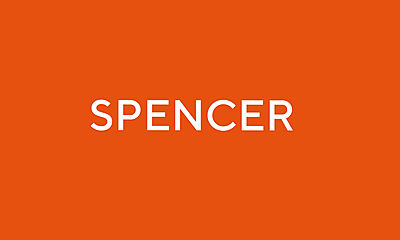

SARL is the research laboratory of Steven Wernke (Professor and Chair, Department of Anthropology, Vanderbilt University), who established the lab in 2007. Our diverse team pursues insights into human social dynamics over a range of spatial and temporal scales through geospatial modeling and analysis. We investigate the political and historical ecology of colonialism, the co-production of communities, states, and their (built) environments, processes of human-environment interaction and landscape dynamics over varied spatio-temporal scales, and the phenomenology of place, among other themes. Much of our research engages these topics in the context of the traumatic social, political, economic, and demographic transformations wrought by the Spanish invasion and colonization of the Americas.
In addressing these research areas, SARL's team pushes frontiers in geospatial modeling and analysis, including AI-based remote sensing (ViT, CNN) for large scale satellite and aerial imagery remote sensing, geophysical survey and analysis, close range and low altitude photogrammetry, spatial network analysis, suitability analysis, geographically weighted regression, and modeling of movement and visual perception.
As a geospatial computational facility, SARL provides advanced workstations and mass storage systems for analyzing large datasets and executing computationally-intensive geospatial processing chains. SARL also houses a pool of field instrumentation.
SARL also fosters trans-disciplinary research by serving as the home of the Vanderbilt Institute for Spatial Research (VISR). The collaborative geospatial research we foster through VISR addresses historical and contemporary world problems in a number of fields, including archaeology, history, education, public health, epidemiology, medicine, earth and environmental science.
SARL is located on the Vanderbilt campus in Garland Hall, room 328.
Lab Access
SARL may be accessed by the Vanderbilt community by permission on a self-serve basis. Contact Dr. Wernke to request lab access.
Funding
